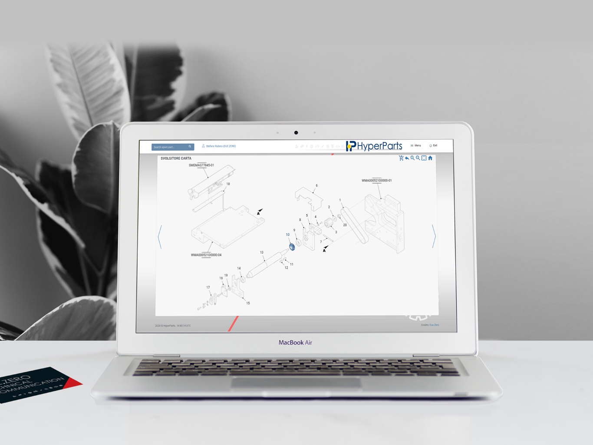

Module / Hyperparts
La connessione globale tra costruttore e cliente finale. Esplora cataloghi interattivi in 3D e gestisci la filiera after-sales in un'unica piattaforma integrata.

Naviga modelli tridimensionali complessi generati direttamente dai tuoi CAD, identificando il singolo componente esploso in pochi secondi e senza errori.
Dal particolare meccanico identificato al carrello: l'ordine dei ricambi avviene direttamente sulla piattaforma e si integra al vostro ERP aziendale in automatico.
Abbattimento drastico degli indici di errore umano nell'invio di codici ricambio, potenziando in modo sostanziale l'assistenza post-vendita al cliente globale.